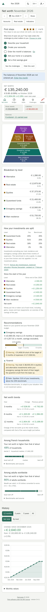
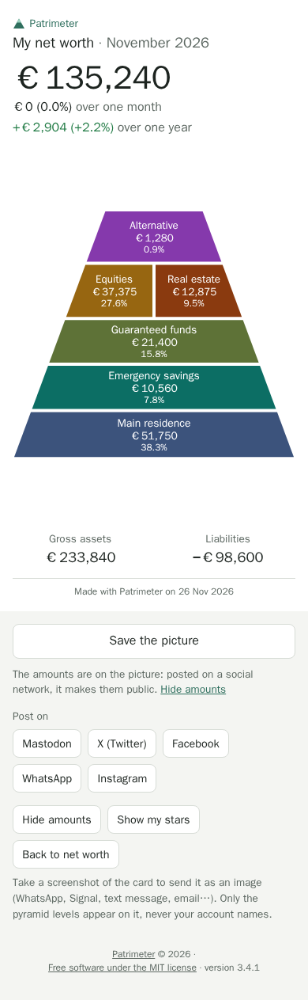
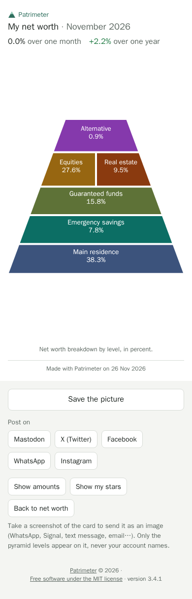

Net worth and history¶
Net worth¶
The Net worth page, first menu and home page, shows the month's net worth and its pyramid. The net worth box also shows your level of the challenges and your number of stars, with a link to them; the Accounts and Real estate buttons, at the top, lead to what it is made of, and Indicators to your own totals (indicators).
| Level | Examples |
|---|---|
| Main residence | Your home, and its mortgage |
| Emergency savings | Current account, savings accounts |
| Guaranteed funds | Guaranteed funds (fonds euros) of life insurance |
| Equities | PEA, securities account, unit-linked funds |
| Real estate | Rental properties, SCPI |
| Alternative | Crypto-assets, gold and other precious metals, jewellery, watches, works of art, wines, car, motorbike, unusual investments |
Each level shows its net value (its assets minus the loans linked to it) and its share of the total. The arrows and the selector change the month. As long as no account exists, the page stays on the current month, the one where you create your first accounts: no arrows and no selector (the same for the monthly update).
Hovering a level of the pyramid, or clicking it, highlights its lines in the other boxes (Breakdown by level, How your investments are split, Since the start of the year): tinted background and a bar on the left, the other levels of the pyramid fade. A click keeps the highlight; a second click, a click elsewhere or Escape removes it. The other way round, hovering a line or reaching it with the keyboard highlights its level in the pyramid.

Calculation rules:
- the value of an account for a month is its balance for that month, otherwise its last earlier balance (carried over);
- an account counts from the month it was opened, and up to the month before it was closed.
In a family account, a choice at the top of the page shows the whole family, one member or this account; it also applies to the report and the budget.
Net worth trends¶
Under the recommendations, Net worth trends gives the change of the net worth over 3, 6 and 12 months up to the month shown (and what that makes per month), next to the change over the same length just before: is your net worth growing faster or slower than before?
From the 20th of the month, if no balance of the current month is entered, the page points it out at the top, with a link to the monthly entry.
Sharing a report¶
To show your net worth to your family, Share (next to the month selector) opens a report for the month: a card without menus, with the net worth, its change over 1 month and over 1 year, the pyramid, the gross assets and the liabilities. On a phone, it fills the whole screen: a screenshot shows it alone.

- The report only shows the levels of the pyramid, never the names of your accounts or your banks.
- Hide amounts only keeps the percentages: the breakdown and the change, without revealing the sums. Show amounts brings them back.
- Show my stars adds, under the pyramid, your stars and your level of the challenges ("★ 15 stars · level 4: Far-sighted"), on the card and on the picture; never an amount. Offered only for your own net worth, with the challenges on; Hide my stars removes them.
- The report follows the month chosen on the Net worth page, and the light or dark theme of the screen.
- Patrimeter publishes and sends nothing: the page stays private to your account, only the picture you share leaves your device.
Below the card, Patrimeter turns it into a picture (a 1080 × 1350 pixel PNG, Instagram's portrait format), in your browser:
- Share the picture… opens the phone's share sheet (or the computer's, if it has one): choose the app, Instagram, WhatsApp, Mastodon, Signal…
- Save the picture downloads it.
- Post on Mastodon, X (Twitter), Facebook, WhatsApp or Instagram: on a phone, the share sheet opens with the
picture; on a computer, the picture is saved and the network opens in a new tab, with a short text for Mastodon, X
and WhatsApp: add the saved picture to it. For Mastodon, enter your server (for example
mastodon.social); the browser remembers it. - With amounts, a warning reminds you: posted on a social network, the picture makes them public. Hide amounts before sharing only keeps the percentages.

How your investments are split¶
Under the pyramid, a table compares the share of each level in your investments with a benchmark: the "balanced" allocation of Avenue des Investisseurs (update of 7 February 2026), which inspired the wealth pyramid.
| Level | Benchmark |
|---|---|
| Guaranteed funds | 45% |
| Equities | 25% |
| Real estate | 25% |
| Alternative | 5% (10% at most) |
- Investments are the sum of these four levels, minus loans. The main residence (base of the pyramid) and emergency savings (about three months of expenses) have no percentage.
- This is only a guide, not investment advice: the right split depends on your time horizon and your risk appetite.
- Without positive investments, the table is not shown.
Since the start of the year¶
Under the source of the benchmark, a second table shows what was put into or taken out of each level of the pyramid since the start of the year, then for the net worth: the net value of the chosen month minus that at the end of December of the previous year (or of January, if your balances start this year). It gives an overview of the savings of the year.
- Patrimeter only knows balances: the change also includes gains and losses (equities, real estate…) and, for the levels that have a loan, the capital repaid.
- A rise is shown with a + sign, a fall with a − sign: the meaning does not rely on colour.
Recommendations¶
To the right of how your investments are split, the Recommendations box reads the month's pyramid together with your budget for the same month.
- Emergency savings: their amount compared with the budget's monthly expenses (needs and wants, savings
excluded), in months of expenses, on a gauge:
- the track has three zones: less than one month, below the household's target, from the target to twice the target;
- the bar stops at the number of months covered, the line marks the target (3 months by default, set it in Tax household and categories);
- a finding comes with the gauge: Alert below one month of expenses, Warning below the target (with the missing amount), Good once the target is reached, Note above twice the target (the surplus could be invested higher up the pyramid).
- Without a budget for the month, Patrimeter does not know your expenses: the box invites you to enter the budget, and shows an Alert if your emergency savings are empty.
- Pyramid: the pyramid is built from the base up. A finding points out equities or alternative investments held while emergency savings fall short of their target, a negative level (loans above the value of the assets), and the largest gap with the allocation benchmark, from 15 points. Without any finding: "Nothing to report".
Each finding has a word and an icon, on top of its colour. These are indicative benchmarks, not investment advice.
Your position among French households¶
Under the details by level, two cards side by side (one under the other on a phone) place your net worth. The left one places your net worth for the month among that of French households: "your net worth is higher than that of about 63% of households", your decile, and a scale from the least to the best off, with the median marked. Benchmarks and source details the thresholds.
- Reference: Insee, Histoire de vie et Patrimoine survey 2023-2024, household net worth in early 2024 (median: €148,100; top 10%: more than €750,400; top 1%: more than €2,728,900).
- Between two published thresholds, the position is estimated along a straight line.
- The comparison is between households: if you only track your own share, and not the wealth of your whole household, your position is underestimated. Insee counts neither durable goods (car, furniture), nor valuables, nor pension rights.
- The calculation is done on your server: nothing is sent elsewhere.
Your position among adults worldwide¶
The right card makes the same comparison on a worldwide scale: "your net worth is higher than that of about 83% of adults worldwide", with a scale graduated at the published band thresholds.
- Reference: UBS, Global Wealth Report 2026, net worth per adult at the end of 2025, in 56 countries that hold more than 92% of global wealth. Under $10,000: 42.1% of adults; under $100,000: 83.2%; under one million: 98.5%; under 5 million: 99.8%.
- The dollar thresholds are converted into euros at the ECB rate of 31 December 2025 ($1.1750 for €1): $10,000 is €8,511, $100,000 is €85,106, one million is €851,064.
- The report only publishes these bands: within each of them, the position is estimated (along a straight line under $10,000, according to the logarithm of net worth above that, each band covering a factor of 10).
- The comparison is between adults, not households: if you track a couple's net worth, your position is overestimated.
History¶
At the very bottom of the Net worth page: how your net worth and each level change over time, as a chart,
over the chosen period (12 months, 2 years, 5 years or all), up to the month shown, with the table of monthly values.
The period and view buttons (Net total or By level) keep the chosen month and come back to the history.
The former /historique address also leads there.